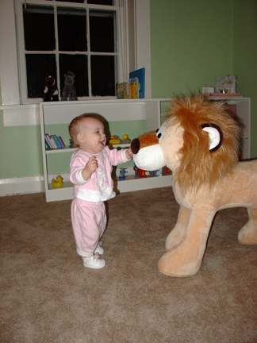

This week in the life of Ceili Kisvarday (March 10, 2008)...
This week Ceili's Grandma Karen went back to LA. We all miss her very much. We have kept up the tradition of going for a walk everyday. Ceili tends to sleep through the walks, but it seems good to get her out in the fresh air. We went to Bald Eagle State Park on Sunday. It is a beautiful nature preserve on a nearby mountain with lovely views over the surrounding valleys. However, it was also quite cold at that elevation, so we took only a brief hike (with Ceili snuggled in a sling).
Bertie (Christine) and Matt came to visit for a few hours on Saturday. They brought Ceili a diaper cake decorated with lots of little things that Ceili needs. Very cute and very thoughtful. We had a really fun visit. Ceili was a generally very good baby during the visit. Matt took many pictures of Ceili...including the We put baby Ceili in a big bowl picture...this time fully swaddled, so that she was comfortable and still. I'll see if Chris can upload the pictures and forward them to you. Matt also helped Chris put together his grill, so we are finally having nice grilled foods again. What a treat. We wished that they could stay longer, but they had to be in Richmond, Virginia at 8am on Sunday, so they had to head home after dinner.
Ceili seems to be smiling a bit more over the last few days, but she still doesn't seem to be smiling at anything in particular. She might be looking at faces a bit more, but it still seems like she can't see very much. We got her bouncy chair put together with batteries etc this week and it is working perfectly. She doesn't seem interested in the lights/sounds yet, but she likes the vibration feature. Though she still likes me to rock the chair with my foot for a little while until she settles down to enjoy the vibration mode. She's sleeping on my lap while I type this letter. She is a bit more insistant on being held than she was before, but she still sleeps in her bassinette without much objection. And the sling has been a great help. It isn't the most ergodynamic baby carrier on the market I assume...it is a small strain on my back (though it is getting easier as I wear it more), but Ceili loves it. When she is crying and crying because she is overstimulated/sleepy, I can just put her in the sling and walk around the house a little bit and she calms down (and usually falls asleep) within a couple of minutes. And my hands are free to do things about the house while we walk. All in all, we are adjusting to our little lives together, but we really miss Karen. Karen, thank you again so much for all your time and help with the new baby. I can't tell you how much I (and the rest of our little family) appreciate it.

This week in the life of Ceili Kisvarday (Nov 30, 2008)...
This week Ceili celebrated her first Thanksgiving (and second and third). We had an early Thanksgiving celebration with some of the people from our church (for which we made our pumpkin cake yet again). On Thanksgiving we had a lovely meal with our wonderful neighbors Beth, Jim, and Edith. We are very thankful to have them as friends. And then we went to the Scott’s house the day after Thanksgiving and had turkey again. We really have a lot to be grateful for.
On Saturday, we met up with some friends from Chris’ work and their families to go out and get Christmas trees. We started off with a nice breakfast at Street of Shops. Then we all carpooled out to a Christmas tree farm in the mountains where we cut down our own trees. The farm says that they plant 3-5 trees for every tree cut down each year. Chris and I looked for the fattest tree in the area for our Christmas tree. We got an absolutely beautiful tree that fills up our bay window perfectly. Gaby’s friend and I had a gorgeous walk through the trees looking at mountain views, and then we all had some hot chocolate while we waited for the trees to be tied up for transport. Brian and Gaby kindly transported all of our trees in their truck. On the way home, we stopped at a local winery. It was a wonderful day. A nice start for the Christmas season.
Ceili continues to scoot around on her walking toy with ease. She still hasn’t gotten any teeth, but she has been teething more and more in the last week or so. She is progressing nicely with solid foods, and now loves to eat table food—especially anything on my plate. Just like her daddy :)
